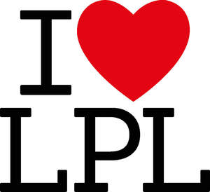

Trade Mark Journal No.2026/010 6 March 2026
UK00004342797 19 February 2026 (21,25,35)

- Class 21
- Cups and mugs.
- Class 25
- Clothing; Headgear.
- Class 35
- Advertising; Advertising and marketing; Advertising copywriting; Advertising and advertisement services; Publicity and advertising; Advertising and publicity; Marketing, advertising, and promotional services; Advertising, promotional and marketing services; Banner advertising; Marketing, advertising and promotion services; Advertising, marketing and promotion services; Promotional and advertising services; Promotional advertising services; Newspaper advertising; Online advertising; Leasing of advertising billboards; Hire of advertising billboards; Advertising services; Copywriting for advertising and promotional purposes; Electronic billboard advertising; Radio advertising; Promotion, advertising and marketing of on-line websites; Leasing of advertising hoardings; On-line advertising and marketing services; Magazine advertising; Advertising and promotion services; Outdoor advertising; On-line advertising; Radio advertising and commercials; Advertising research; Hire of advertising hoardings; Graphic advertising services; Distribution of advertising, marketing and promotional material; Advertising agency services; Digital advertising services; Dissemination of advertising, marketing and publicity materials; Design of advertising brochures; Classified advertising; Distribution of advertising brochures; Advertising planning; Arrangement of advertising; Advertising consultation; Online advertising services; Consultancy services relating to advertising, publicity and marketing; Response advertising; Advertising flyer distribution; Rental of billboards [advertising boards]; Press advertising services; Rental of advertisement space and advertising material; Advertising, promotional and public relations services; Production of advertising matter and commercials; Elevator advertising; Services of advertising agencies; Press advertising consultancy; Dissemination of advertising and promotional materials; Distribution of advertising announcements; Classified advertising services; Hiring of advertising materials; Direct market advertising; Exhibitions for commercial or advertising purposes; Promotional advertising for exploration projects; Advertising for others; Radio and television advertising; Post-production editing of advertising or commercials; Advertisement billboards (Rental of -); Rental of advertisement billboards; Distribution of advertising leaflets; Distribution of advertising materials; Consultancy relating to advertising; Rental of advertising material; Planning services for advertising; Advertising text publication services; Advertising, including on-line advertising on a computer network; Advertising, marketing and promotional consultancy, advisory and assistance services; Publication of advertising literature; Production of advertising materials; Arranging of advertising in cinemas; Design of advertising materials; Marketing; Rental of signs for advertising purposes; Advertising and marketing services provided by means of social media; Production of advertising matter; Publication of advertising texts; Dissemination of advertising materials; Organisation of customer loyalty programs for commercial, promotional or advertising purposes; Consultancy relating to advertising and promotion services; Advertising particularly services for the promotion of goods; Distribution of products for advertising purposes; Organisation of exhibitions for commercial or advertising purposes.
I Love Media Limited
Representative: The Trademark Helpline